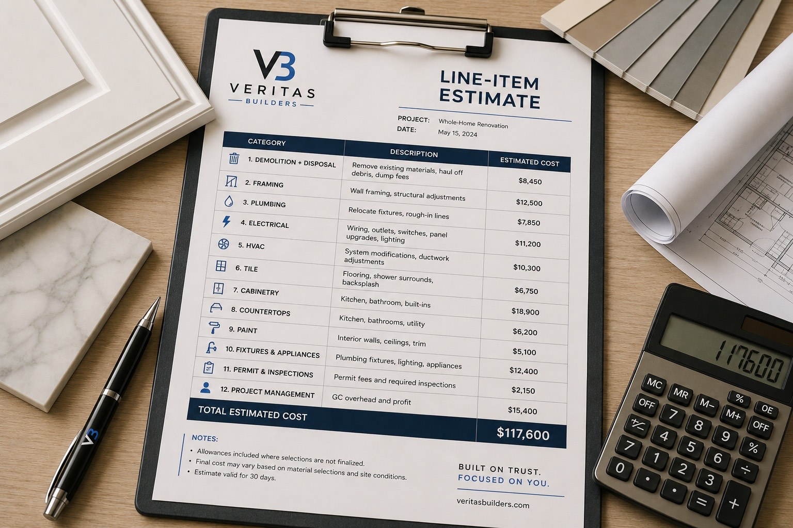

Blog · Guide · Published June 2026
How to Choose a Contractor in Greater Houston
Picking the wrong contractor is the most expensive mistake a homeowner can make. Here's how to vet one properly in Greater Houston, what to ask before you sign, and the red flags that separate a real builder from a flipper or a fly-by-night crew.
1. Start with the basics: licensing & insurance
Texas doesn't license general contractors the way some states do, but the trades that work under a GC absolutely require licenses:
- Electricians must be licensed by the Texas Department of Licensing and Regulation (TDLR)
- Plumbers must be licensed by the Texas State Board of Plumbing Examiners (TSBPE)
- HVAC contractors are licensed by TDLR
Ask any contractor you're considering for their general liability insurance certificate and, if they have employees on site, their workers' compensation certificate. Don't take "we're insured" as an answer — ask them to have their insurer email you a certificate of insurance (COI) naming you as the certificate holder. It costs them nothing and takes 5 minutes. A contractor who refuses or stalls is showing you who they are.
2. Look at recent work, not just photos
Online photos are easy to fake or borrow from another company. Real social proof:
- Google reviews on their Business Profile — both the count and the recency. 5 reviews from 2019 is a warning sign.
- Houzz / Angi / BBB profiles — same idea. Look at the responses to negative reviews. A pro handles them gracefully; a flake gets defensive.
- Ask to talk to a customer from the last 3-6 months who had a similar scope to yours. Any contractor worth hiring will offer a reference.
- Ask to drive by an in-progress jobsite, not just a finished one. The state of an active site tells you everything about how they actually work — clean lines, tarps where they should be, materials staged, vs. tools strewn around and cigarette butts in the yard.
3. Compare apples to apples on bids
The single most common homeowner mistake is comparing bids by bottom-line number. Two contractors can quote the "same" bathroom remodel and one comes in $4,000 cheaper — but the cheaper one has skipped the waterproofing system, used builder-grade plumbing fixtures, and quoted no allowance for unforeseen rot. Three months in, that "savings" turns into a $12,000 change-order surprise.
Insist on line-item estimates. A proper estimate breaks out:
- Demolition + disposal
- Each trade (framing, plumbing, electrical, HVAC, tile, paint, etc.)
- Materials by category (cabinets, counters, tile, fixtures) with allowances for the items the homeowner selects
- Permit + inspection costs (or a clear statement that "homeowner is responsible for permits")
- Project management / GC overhead and profit (call it what it is)
A one-line "Bathroom remodel: $32,000" bid is impossible to compare against anything — and it's almost always hiding something.

4. Questions to ask before you sign
- Who is my project manager — the same person who walked the job, or someone I'll meet on day one?
- Will you pull permits, or am I expected to?
- What's the schedule, in writing — start date, key milestones, expected completion?
- How do you handle change orders? (Right answer: documented in writing with a price and timeline impact, BEFORE any work begins. Wrong answer: "we'll just add it to the final bill.")
- How do you handle payment? (Reasonable: a deposit at signing, draw schedule tied to milestones, final payment after walkthrough and punch list. Red flag: large upfront payment, especially in cash, especially before materials are ordered.)
- What's your warranty? (Industry standard: 1 year on workmanship. Some materials carry longer manufacturer warranties.)
- What happens if I'm not happy with something during the build?
5. Red flags that should end the conversation
- Cash-only deposits. Pros take checks or card. Cash-only is for tax evasion or for vanishing.
- Pressure to sign today. "If you sign right now I'll knock $3K off" is a sales tactic, not a contractor.
- No written contract beyond a one-page estimate. The contract should specify scope, schedule, payment, change-order process, warranty, and what happens if either party walks.
- No business address, no business phone — just a cell number and a magnetic logo on a personal truck. Sometimes legit small operators look this way, but pair it with any of the above and walk.
- Door-knocking after a storm. Reputable roofers in Texas don't go door-to-door after hailstorms. The people who do are storm chasers who often disappear before the work is finished.
- "My uncle's a roofer / electrician / plumber" as a substitute for a licensed sub. Affection is not licensing.
6. Trust your gut on the walkthrough
The first walkthrough is interview both ways. Did they listen, take notes, ask the right questions? Did they actually look at the space, or did they hand you a price after 5 minutes? Did they explain trade-offs, or just tell you what you wanted to hear?
A good contractor will sometimes talk you out of something — pushing back on a scope decision that won't serve you long-term. That's a feature, not a bug.
Ready to start vetting?
Veritas Builders is a general contractor based in Magnolia, TX, serving Greater Houston and Montgomery County. We give honest line-item estimates, document every change order in writing, and don't ask for cash. Walkthroughs are free.